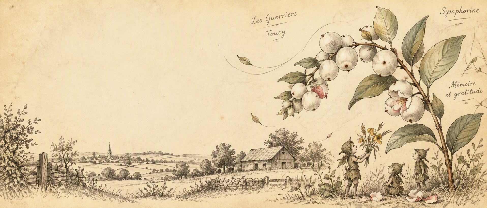

Le chant des marshmallow sauvages
Aux Guerriers, près de Toucy, les minimoys découvrent que la gratitude et la mémoire sont parfois les clés qui permettent à la Symphorine de retrouver son chant.
Dans le hameau des Guerriers, non loin de Toucy, les bosquets et les talus gardaient encore le murmure des saisons. Là se trouvait un petit sanctuaire de Symphorine, l’arbuste aux marshmallows sauvages, dont le chant guide les minimoys, ces êtres minuscules et attentifs aux rythmes du bocage.
Mais l’ombre d’un autre temps plane sur le lieu-dit. Quelques années plus tôt, alors que le monde autour s’était hérissé de peur et de silence, des gens discrets du coin avaient risqué leur vie pour protéger des voisins, et même des inconnus, persécutés par d’autres hommes.
Dans la mémoire des anciens, on parlait des familles accueillies dans des granges, d’hommes de la gendarmerie ou d’habitants du bocage qui avaient caché, nourri et déguisé des familles pour les soustraire aux rafles.
L’année dernière, les minimoys ont vécu leur propre inquiétude : la Symphorine était devenue muette. Les baies blanches n’éclataient plus, et l’Esprit de Souffle semblait ensommeillé.
C’est dans ce contexte qu’Aélia, la plus jeune de la tribu, s’aventura au pied du bosquet et entendit l’ancien chant des humains : des chuchotements, des pas étouffés, puis des promesses murmurées par des voix qui savaient ce qu’il en coûtait d’aider.
Ce chant coincé entre les branches et porté par le vent du temps portait en lui la peur, la mort mais aussi l’espoir.
En revenant à son village, elle apprit des plus vieux de la tribu que, pendant l’horrible guerre des humains, une famille juive, traquée, avait été mise à l’abri dans une petite maison aux Guerriers. C’étaient des habitants du village voisin, Toucy, qui s’étaient partagé les soins et les silences, emportant parfois des messages au marché de Toucy, donnant de la nourriture, et planifiant tout cela en secret.
Ces gestes modestes étaient devenus, pour Aélia, des perles invisibles de courage, une autre forme de Symphorine humaine.
Aélia comprit alors que l’Esprit de Souffle s’était tari quand les humains avaient cessé d’écouter la souffrance des autres et arrêté d’agir pour lutter contre l’horreur.
Aélia comprit que gratitude et protection allaient de pair : il ne suffisait pas de recevoir, il fallait aussi se souvenir et transmettre.
Sous l’insistance d’Aélia, la tribu organisa alors une veillée non seulement pour remercier la Symphorine, mais aussi pour se souvenir.
Ils déposèrent autour de l’arbuste non seulement pétales et rosée, mais aussi un petit bouquet tressé de paille et de boutons d’or, offert en hommage aux hommes et femmes du bocage qui avaient caché et aidé, modestes héros dont les noms parfois restent dans la bouche des familles, parfois sont consignés dans des archives, parfois ont reçu des honneurs comme celui de « Juste parmi les nations ».
Quand les Minimoys entonnèrent leur chant, on entendit d’abord un souffle, puis un pop léger : les marshmallows sauvages s’ouvrirent, et la Symphorine chanta comme pour bénir le souvenir.
À la lisière du bosquet, comme une deuxième musique, les voix humaines reprirent en silence un autre refrain, celui de la mémoire et de la reconnaissance, afin que jamais ne s’éteigne la lumière de ceux qui avaient offert refuge dans les heures sombres.
Depuis, aux Guerriers, lorsque la brume se lève sur les talus, les anciens murmurent l’histoire : la Symphorine chante si l’on honore ceux qui ont donné sans rien attendre en retour.
Et les Minimoys, petits gardiens, veillent à ce que les petits marshmallows empoisonnés et la mémoire humaine restent vivantes.
Conte de Guillaume